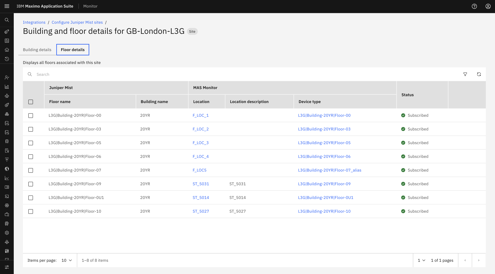
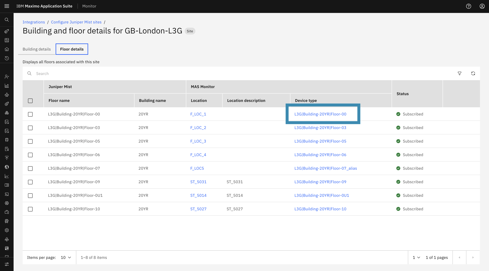
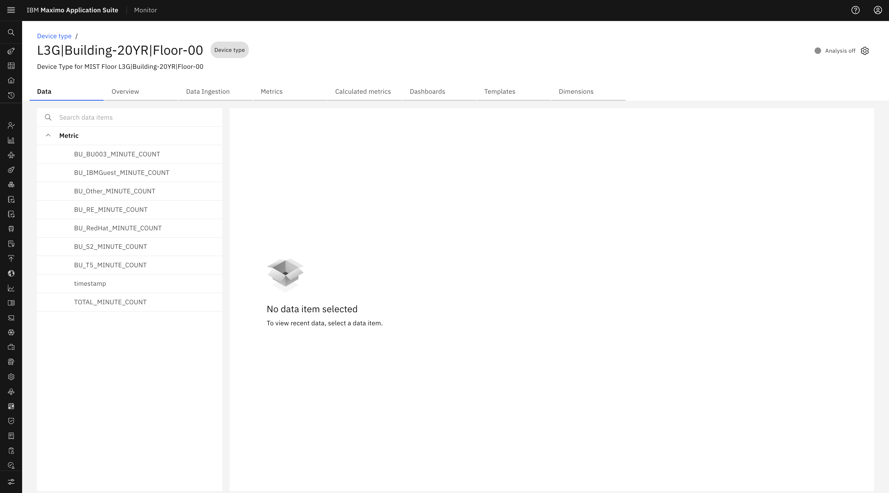
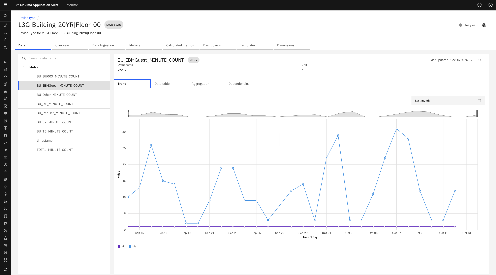
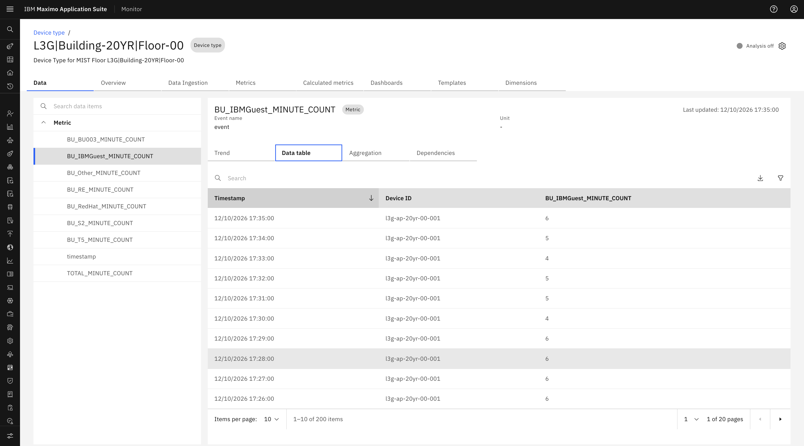

Objectives
In this Exercise you will learn how DeviceTypes and Access Points are automatically created and assigned upon floor subscription.
Before you begin:
This Exercise requires that you have:
- Completed the pre-requisites required for all labs
- Completed the previous exercises
- Subscribed at least one Juniper Mist Floor
Device Type & Occupancy Metrics Creation
Once a Floor is subscribed, a background scheduler automatically prepares the selected location for MIST data collection:
- DeviceType Creation: Once a floor is successfully subscribed, the required DeviceType is created for the subscribed floor.
- Access Point Discovery: The Access Points (APs) are then discovered and created as Monitor devices under that device type. Access points are assigned to the subscribed floor location.
- Business Unit Metrics: Creates the required metrics for each Business Unit, including
totaland other business units. - WebSocket Connection: The Site of the subscribed floor is connected to the WebSocket listener, allowing Monitor to receive live user events from Juniper Mist.

Viewing Device Type Overview & Metrics
To view the generated DeviceType and its metrics:
-
Click the Device Type link from the Floor Details tab to open the Device Type Overview page.

-
In the Data tab, expand Metrics to view the available Business Unit metrics.

-
Selecting a metric displays the corresponding data received for that metric.

